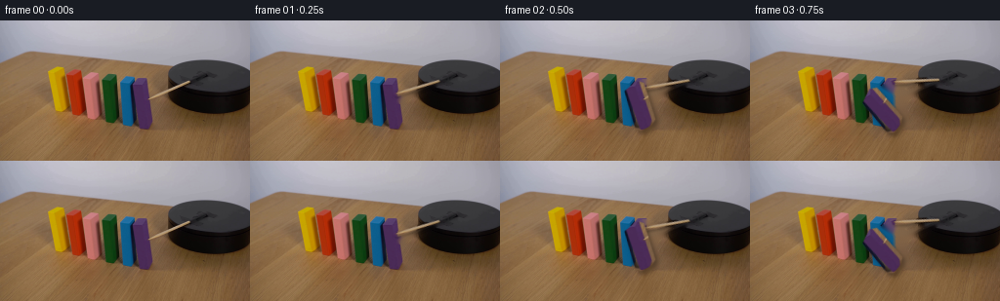
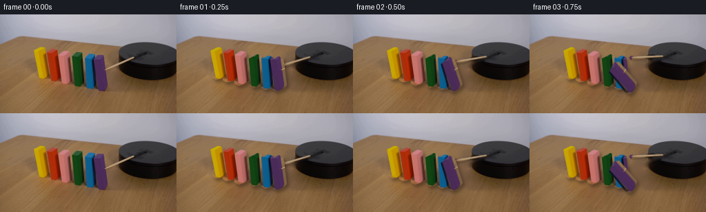
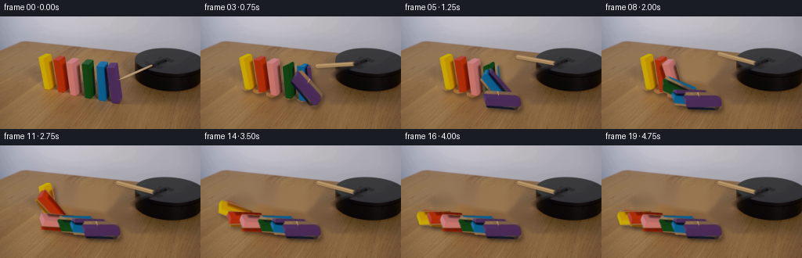
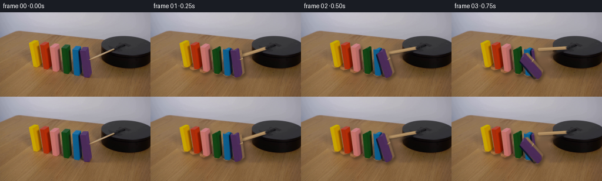
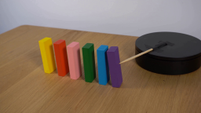
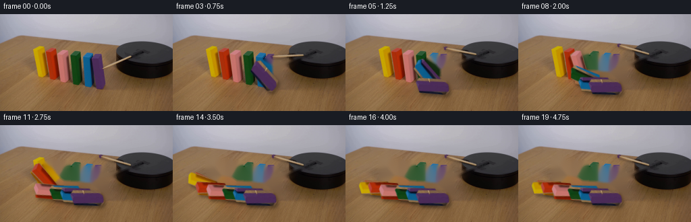
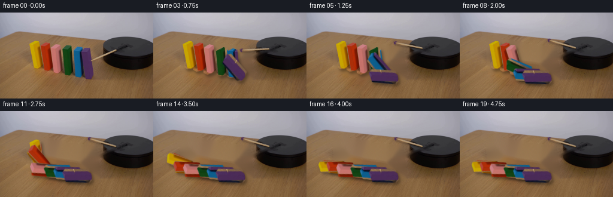
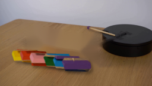

CODING AGENTS AS PIXEL WORLD MODELS
traex/GPT-5.6-Sol · 0036
点击播放 · 原生 RGB 像素
逐轮保存的候选
回放视频、检查图与代码变化。
每份候选均可单独播放。实际图片检查记录在下方工具轨迹中。
候选 01播放与检查图
点击播放 · 原生 RGB 像素


展开代码变化
--- 上一保存版本
+++ 本次保存版本
@@ -0,0 +1,154 @@
+from pathlib import Path
+import math
+import cv2
+import numpy as np
+from PIL import Image
+import artifact_io
+
+CASE_DIR = Path(__file__).resolve().parent
+SRC = np.asarray(Image.open(CASE_DIR / 'first_frame.png').convert('RGB'), dtype=np.uint8)
+H, W = SRC.shape[:2]
+
+# Silhouettes and foot pivots measured from the supplied locked-off frame.
+# Listed from the far/left domino to the near/right domino.
+BLOCKS = [
+ ([(49,53),(61,47),(68,50),(72,89),(67,93),(57,95),(52,92)], (64.0,91.5)),
+ ([(65,56),(78,50),(84,52),(87,93),(81,97),(72,99),(67,96)], (78.0,95.0)),
+ ([(80,59),(94,53),(101,55),(105,96),(99,101),(90,104),(84,101)], (95.5,99.0)),
+ ([(104,65),(117,58),(124,60),(129,99),(122,104),(111,107),(106,103)], (117.0,102.0)),
+ ([(120,67),(133,60),(140,62),(145,102),(139,107),(128,110),(123,106)], (134.0,105.0)),
+ ([(134,69),(148,61),(155,64),(160,103),(155,108),(144,112),(138,108)], (150.0,107.0)),
+]
+
+
+def soft_polygon(points, scale=4):
+ """Antialiased single-channel polygon mask."""
+ canvas = np.zeros((H*scale, W*scale), np.uint8)
+ pts = np.round(np.asarray(points, np.float32)*scale).astype(np.int32)
+ cv2.fillPoly(canvas, [pts], 255, lineType=cv2.LINE_AA)
+ return cv2.resize(canvas, (W,H), interpolation=cv2.INTER_AREA)
+
+
+# Sprite masks retain the exact colors, face shading and little wood variations
+# already present in the source image.
+block_alpha = []
+for poly, _ in BLOCKS:
+ block_alpha.append(soft_polygon(poly))
+
+# A wider cleanup mask removes each old block, its antialias fringe, and its small
+# contact shadow. It is only exposed after that particular block starts moving.
+cleanup_masks = []
+for a in block_alpha:
+ m = cv2.dilate((a > 8).astype(np.uint8)*255, np.ones((3,3),np.uint8), iterations=1)
+ # Existing shadows fall a few pixels to the lower right.
+ shadow = np.zeros_like(m)
+ shadow[2:,2:] = m[:-2,:-2]
+ m = cv2.max(m, shadow)
+ cleanup_masks.append(m)
+
+# Original wooden striker, running from its pale tip into the dark hub.
+PIVOT = (198.0, 60.0)
+rod_mask = np.zeros((H,W), np.uint8)
+cv2.line(rod_mask, (151,81), (199,59), 255, 4, lineType=cv2.LINE_AA)
+# Do not lift much of the hub into the rotating sprite.
+cv2.circle(rod_mask, (198,60), 3, 0, -1, lineType=cv2.LINE_AA)
+rod_cleanup = cv2.dilate(rod_mask, np.ones((3,3),np.uint8), iterations=1)
+
+# Inpaint once for every progressive state. Larger-radius Telea produces the
+# softly focused tabletop expected behind the objects while preserving the rest
+# of the source pixel-for-pixel.
+clear_bases = []
+for moved_count in range(7):
+ # moved_count is how many blocks, counted from the right, have left their spots.
+ mask = rod_cleanup.copy()
+ for j in range(moved_count):
+ mask = cv2.max(mask, cleanup_masks[5-j])
+ # OpenCV works BGR but the operation is channel-symmetric.
+ bgr = cv2.cvtColor(SRC, cv2.COLOR_RGB2BGR)
+ clean = cv2.inpaint(bgr, mask, 4, cv2.INPAINT_TELEA)
+ clear_bases.append(cv2.cvtColor(clean, cv2.COLOR_BGR2RGB))
+
+
+def affine_about(pivot, degrees):
+ """cv2 affine matrix; negative degrees is clockwise in screen coordinates."""
+ return cv2.getRotationMatrix2D(pivot, degrees, 1.0)
+
+
+def warp_full(arr, mat, interpolation, border=0):
+ return cv2.warpAffine(arr, mat, (W,H), flags=interpolation,
+ borderMode=cv2.BORDER_CONSTANT, borderValue=border)
+
+
+def over(dst, src, alpha):
+ af = alpha.astype(np.float32)[...,None] / 255.0
+ return np.clip(src.astype(np.float32)*af + dst.astype(np.float32)*(1.0-af), 0, 255).astype(np.uint8)
+
+
+def dark_shadow(frame, alpha, dx=2, dy=3, strength=0.28, blur=2.0):
+ shifted = np.zeros_like(alpha)
+ ys0, ys1 = max(0,-dy), min(H,H-dy)
+ xs0, xs1 = max(0,-dx), min(W,W-dx)
+ shifted[ys0+dy:ys1+dy, xs0+dx:xs1+dx] = alpha[ys0:ys1, xs0:xs1]
+ shifted = cv2.GaussianBlur(shifted, (0,0), blur)
+ a = shifted.astype(np.float32)[...,None] / 255.0 * strength
+ return np.clip(frame.astype(np.float32)*(1.0-a),0,255).astype(np.uint8)
+
+
+def fall_angle(frame_index, start):
+ # A gravity-like accelerating fall followed by a short, damped settling phase.
+ u = (frame_index - start) / 4.5
+ if u <= 0:
+ return 0.0
+ if u < 1.0:
+ # smooth accelerating angular travel; zero slope at the initial instant
+ q = u*u*(3.0-2.0*u)
+ return 82.0*q
+ # tiny rebound after impact, gone within a second
+ v = frame_index - (start + 4.5)
+ return 82.0 - 2.2*math.exp(-max(v,0)*1.5)*math.cos(max(v,0)*3.0)
+
+
+# Nearest domino starts first; two frames (0.5 s) separate each impact.
+STARTS = [11, 9, 7, 5, 3, 1]
+frames = [SRC.copy()] # Contract: frame 00 is exactly the supplied PNG.
+
+for fi in range(1,20):
+ angles = [fall_angle(fi, s) for s in STARTS]
+ moved = sum(a > 0.01 for a in angles)
+ frame = clear_bases[moved].copy()
+
+ # The rod makes a clearly clockwise, finite powered stroke and then holds.
+ rod_delta = min(40.0, fi*7.0)
+ rm = affine_about(PIVOT, -rod_delta)
+ ra = warp_full(rod_mask, rm, cv2.INTER_LINEAR)
+ # Shadow is subtly offset on the tabletop.
+ frame = dark_shadow(frame, ra, dx=1, dy=2, strength=0.20, blur=1.0)
+ rod_rgb = warp_full(SRC, rm, cv2.INTER_LINEAR)
+ frame = over(frame, rod_rgb, ra)
+
+ # Put back the fixed central cap so the stick reads as attached to the platform.
+ yy, xx = np.ogrid[:H,:W]
+ cap = np.clip((5.0 - np.sqrt((xx-198.0)**2 + (yy-60.0)**2))*90,0,255).astype(np.uint8)
+ frame = over(frame, SRC, cap)
+
+ # Shadows first, from far/left to near/right, then exact source-color sprites.
+ warped = []
+ for i, ((poly,pivot), a) in enumerate(zip(BLOCKS, angles)):
+ if a <= 0.01:
+ continue
+ # Toppling toward the next block is counter-clockwise on the image,
+ # represented by positive cv2 rotation.
+ mat = affine_about(pivot, a)
+ alpha = warp_full(block_alpha[i], mat, cv2.INTER_LINEAR)
+ rgb = warp_full(SRC, mat, cv2.INTER_LINEAR)
+ warped.append((i, alpha, rgb))
+ frame = dark_shadow(frame, alpha, dx=3, dy=4, strength=0.31, blur=2.2)
+ for i, alpha, rgb in warped:
+ frame = over(frame, rgb, alpha)
+
+ frames.append(frame)
+
+frames = np.stack(frames).astype(np.uint8)
+assert frames.shape == (20,144,256,3)
+assert np.array_equal(frames[0], SRC)
+artifact_io.save(frames, CASE_DIR)
候选 02播放与检查图
点击播放 · 原生 RGB 像素


展开代码变化
--- 上一保存版本
+++ 本次保存版本
@@ -36,7 +36,7 @@
block_alpha.append(soft_polygon(poly))
# A wider cleanup mask removes each old block, its antialias fringe, and its small
-# contact shadow. It is only exposed after that particular block starts moving.
+# contact shadow.
cleanup_masks = []
for a in block_alpha:
m = cv2.dilate((a > 8).astype(np.uint8)*255, np.ones((3,3),np.uint8), iterations=1)
@@ -54,19 +54,15 @@
cv2.circle(rod_mask, (198,60), 3, 0, -1, lineType=cv2.LINE_AA)
rod_cleanup = cv2.dilate(rod_mask, np.ones((3,3),np.uint8), iterations=1)
-# Inpaint once for every progressive state. Larger-radius Telea produces the
-# softly focused tabletop expected behind the objects while preserving the rest
-# of the source pixel-for-pixel.
-clear_bases = []
-for moved_count in range(7):
- # moved_count is how many blocks, counted from the right, have left their spots.
- mask = rod_cleanup.copy()
- for j in range(moved_count):
- mask = cv2.max(mask, cleanup_masks[5-j])
- # OpenCV works BGR but the operation is channel-symmetric.
- bgr = cv2.cvtColor(SRC, cv2.COLOR_RGB2BGR)
- clean = cv2.inpaint(bgr, mask, 4, cv2.INPAINT_TELEA)
- clear_bases.append(cv2.cvtColor(clean, cv2.COLOR_BGR2RGB))
+# Make one clean plate and always re-composite every domino. The deliberately
+# generous block mask prevents saturated edge pixels from bleeding into vacated
+# locations during inpainting.
+plate_mask = rod_cleanup.copy()
+for m in cleanup_masks:
+ plate_mask = cv2.max(plate_mask, cv2.dilate(m, np.ones((9,9),np.uint8), 1))
+bgr = cv2.cvtColor(SRC, cv2.COLOR_RGB2BGR)
+clean_plate = cv2.cvtColor(cv2.inpaint(bgr, plate_mask, 6, cv2.INPAINT_TELEA),
+ cv2.COLOR_BGR2RGB)
def affine_about(pivot, degrees):
@@ -114,8 +110,7 @@
for fi in range(1,20):
angles = [fall_angle(fi, s) for s in STARTS]
- moved = sum(a > 0.01 for a in angles)
- frame = clear_bases[moved].copy()
+ frame = clean_plate.copy()
# The rod makes a clearly clockwise, finite powered stroke and then holds.
rod_delta = min(40.0, fi*7.0)
@@ -134,8 +129,6 @@
# Shadows first, from far/left to near/right, then exact source-color sprites.
warped = []
for i, ((poly,pivot), a) in enumerate(zip(BLOCKS, angles)):
- if a <= 0.01:
- continue
# Toppling toward the next block is counter-clockwise on the image,
# represented by positive cv2 rotation.
mat = affine_about(pivot, a)
候选 03播放与检查图
点击播放 · 原生 RGB 像素


展开代码变化
--- 上一保存版本
+++ 本次保存版本
@@ -118,8 +118,25 @@
ra = warp_full(rod_mask, rm, cv2.INTER_LINEAR)
# Shadow is subtly offset on the tabletop.
frame = dark_shadow(frame, ra, dx=1, dy=2, strength=0.20, blur=1.0)
- rod_rgb = warp_full(SRC, rm, cv2.INTER_LINEAR)
- frame = over(frame, rod_rgb, ra)
+ # Draw the shaft from clean sampled wood tones rather than rotating source
+ # pixels at its tip (the source tip overlaps the purple block).
+ tip = rm @ np.array([152.0, 81.0, 1.0])
+ shaft = np.zeros((H,W), np.uint8)
+ cv2.line(shaft, tuple(np.round(tip).astype(int)), (198,60), 255, 3,
+ lineType=cv2.LINE_AA)
+ shaft_rgb = np.zeros_like(frame)
+ shaft_rgb[:] = (166, 132, 91)
+ frame = over(frame, shaft_rgb, shaft)
+ highlight = np.zeros((H,W), np.uint8)
+ # A one-pixel highlight on the lit upper edge retains the source's rounded look.
+ tv = np.array([198.0-tip[0], 60.0-tip[1]])
+ ln = max(np.linalg.norm(tv), 1.0)
+ normal = np.array([tv[1], -tv[0]]) / ln
+ p0 = np.round(tip + normal*0.7).astype(int)
+ p1 = np.round(np.array([198.0,60.0]) + normal*0.7).astype(int)
+ cv2.line(highlight, tuple(p0), tuple(p1), 155, 1, lineType=cv2.LINE_AA)
+ hi_rgb = np.zeros_like(frame); hi_rgb[:] = (206, 177, 130)
+ frame = over(frame, hi_rgb, highlight)
# Put back the fixed central cap so the stick reads as attached to the platform.
yy, xx = np.ogrid[:H,:W]
可观测工具轨迹
实际执行的命令与返回图片。
命令 1exit 0
/bin/bash -lc "cat prompt.txt && printf '\\n--- GENERATION RULES ---\\n' && cat GENERATION_RULES.md"
命令 2exit 0
/bin/bash -lc "find . -maxdepth 2 -type f -printf '%p\\n' | sort"
命令 3exit 0
/bin/bash -lc "python3 - <<'PY'
from PIL import Image
im=Image.open('first_frame.png')
print(im.size, im.mode)
PY
ffmpeg -version | head -n 2
python3 - <<'PY'
mods=['PIL','numpy','cv2','imageio']
for m in mods:
try:
x=__import__(m); print(m,'ok',getattr(x,'__version__',''))
except Exception as e: print(m,'ERR',e)
PY"命令 4exit 0
/bin/bash -lc 'cat artifact_io.py'
命令 5exit 0
/bin/bash -lc "python3 - <<'PY'
import cv2, numpy as np
im=cv2.imread('first_frame.png')
hsv=cv2.cvtColor(im,cv2.COLOR_BGR2HSV)
# sample ROIs centers, unique prominent hsv medians where saturation >70
for name,(x1,y1,x2,y2) in {'yellow':(47,45,70,97),'red':(62,48,85,101),'pink':(78,50,103,104),'gray':(94,52,117,108),'green':(105,54,128,110),'blue':(119,55,143,113),'purple':(134,57,159,116)}.items():
a=hsv[y1:y2,x1:x2]; p=a[a[:,:,1]>60]
print(name,'n',len(p),'median',np.median(p,axis=0).astype(int),'ranges',np.percentile(p,[5,95],axis=0).astype(int).tolist())
PY"命令 6exit 0
/bin/bash -lc "python3 - <<'PY'
from PIL import Image
im=Image.open('first_frame.png')
im.resize((1024,576),Image.Resampling.NEAREST).save('.tmp/up.png')
PY"命令 7exit 0
/bin/bash -lc "cat > generate.py <<'PY'
from pathlib import Path
import math
import cv2
import numpy as np
from PIL import Image
import artifact_io
CASE_DIR = Path(__file__).resolve().parent
SRC = np.asarray(Image.open(CASE_DIR / 'first_frame.png').convert('RGB'), dtype=np.uint8)
H, W = SRC.shape[:2]
# Silhouettes and foot pivots measured from the supplied locked-off frame.
# Listed from the far/left domino to the near/right domino.
BLOCKS = [
([(49,53),(61,47),(68,50),(72,89),(67,93),(57,95),(52,92)], (64.0,91.5)),
([(65,56),(78,50),(84,52),(87,93),(81,97),(72,99),(67,96)], (78.0,95.0)),
([(80,59),(94,53),(101,55),(105,96),(99,101),(90,104),(84,101)], (95.5,99.0)),
([(104,65),(117,58),(124,60),(129,99),(122,104),(111,107),(106,103)], (117.0,102.0)),
([(120,67),(133,60),(140,62),(145,102),(139,107),(128,110),(123,106)], (134.0,105.0)),
([(134,69),(148,61),(155,64),(160,103),(155,108),(144,112),(138,108)], (150.0,107.0)),
]
def soft_polygon(points, scale=4):
\"\"\"Antialiased single-channel polygon mask.\"\"\"
canvas = np.zeros((H*scale, W*scale), np.uint8)
pts = np.round(np.asarray(points, np.float32)*scale).astype(np.int32)
cv2.fillPoly(canvas, [pts], 255, lineType=cv2.LINE_AA)
return cv2.resize(canvas, (W,H), interpolation=cv2.INTER_AREA)
# Sprite masks retain the exact colors, face shading and little wood variations
# already present in the source image.
block_alpha = []
for poly, _ in BLOCKS:
block_alpha.append(soft_polygon(poly))
# A wider cleanup mask removes each old block, its antialias fringe, and its small
# contact shadow. It is only exposed after that particular block starts moving.
cleanup_masks = []
for a in block_alpha:
m = cv2.dilate((a > 8).astype(np.uint8)*255, np.ones((3,3),np.uint8), iterations=1)
# Existing shadows fall a few pixels to the lower right.
shadow = np.zeros_like(m)
shadow[2:,2:] = m[:-2,:-2]
m = cv2.max(m, shadow)
cleanup_masks.append(m)
# Original wooden striker, running from its pale tip into the dark hub.
PIVOT = (198.0, 60.0)
rod_mask = np.zeros((H,W), np.uint8)
cv2.line(rod_mask, (151,81), (199,59), 255, 4, lineType=cv2.LINE_AA)
# Do not lift much of the hub into the rotating sprite.
cv2.circle(rod_mask, (198,60), 3, 0, -1, lineType=cv2.LINE_AA)
rod_cleanup = cv2.dilate(rod_mask, np.ones((3,3),np.uint8), iterations=1)
# Inpaint once for every progressive state. Larger-radius Telea produces the
# softly focused tabletop expected behind the objects while preserving the rest
# of the source pixel-for-pixel.
clear_bases = []
for moved_count in range(7):
# moved_count is how many blocks, counted from the right, have left their spots.
mask = rod_cleanup.copy()
for j in range(moved_count):
mask = cv2.max(mask, cleanup_masks[5-j])
# OpenCV works BGR but the operation is channel-symmetric.
bgr = cv2.cvtColor(SRC, cv2.COLOR_RGB2BGR)
clean = cv2.inpaint(bgr, mask, 4, cv2.INPAINT_TELEA)
clear_bases.append(cv2.cvtColor(clean, cv2.COLOR_BGR2RGB))
def affine_about(pivot, degrees):
\"\"\"cv2 affine matrix; negative degrees is clockwise in screen coordinates.\"\"\"
return cv2.getRotationMatrix2D(pivot, degrees, 1.0)
def warp_full(arr, mat, interpolation, border=0):
return cv2.warpAffine(arr, mat, (W,H), flags=interpolation,
borderMode=cv2.BORDER_CONSTANT, borderValue=border)
def over(dst, src, alpha):
af = alpha.astype(np.float32)[...,None] / 255.0
return np.clip(src.astype(np.float32)*af + dst.astype(np.float32)*(1.0-af), 0, 255).astype(np.uint8)
def dark_shadow(frame, alpha, dx=2, dy=3, strength=0.28, blur=2.0):
shifted = np.zeros_like(alpha)
ys0, ys1 = max(0,-dy), min(H,H-dy)
xs0, xs1 = max(0,-dx), min(W,W-dx)
shifted[ys0+dy:ys1+dy, xs0+dx:xs1+dx] = alpha[ys0:ys1, xs0:xs1]
shifted = cv2.GaussianBlur(shifted, (0,0), blur)
a = shifted.astype(np.float32)[...,None] / 255.0 * strength
return np.clip(frame.astype(np.float32)*(1.0-a),0,255).astype(np.uint8)
def fall_angle(frame_index, start):
# A gravity-like accelerating fall followed by a short, damped settling phase.
u = (frame_index - start) / 4.5
if u <= 0:
return 0.0
if u < 1.0:
# smooth accelerating angular travel; zero slope at the initial instant
q = u*u*(3.0-2.0*u)
return 82.0*q
# tiny rebound after impact, gone within a second
v = frame_index - (start + 4.5)
return 82.0 - 2.2*math.exp(-max(v,0)*1.5)*math.cos(max(v,0)*3.0)
# Nearest domino starts first; two frames (0.5 s) separate each impact.
STARTS = [11, 9, 7, 5, 3, 1]
frames = [SRC.copy()] # Contract: frame 00 is exactly the supplied PNG.
for fi in range(1,20):
angles = [fall_angle(fi, s) for s in STARTS]
moved = sum(a > 0.01 for a in angles)
frame = clear_bases[moved].copy()
# The rod makes a clearly clockwise, finite powered stroke and then holds.
rod_delta = min(40.0, fi*7.0)
rm = affine_about(PIVOT, -rod_delta)
ra = warp_full(rod_mask, rm, cv2.INTER_LINEAR)
# Shadow is subtly offset on the tabletop.
frame = dark_shadow(frame, ra, dx=1, dy=2, strength=0.20, blur=1.0)
rod_rgb = warp_full(SRC, rm, cv2.INTER_LINEAR)
frame = over(frame, rod_rgb, ra)
# Put back the fixed central cap so the stick reads as attached to the platform.
yy, xx = np.ogrid[:H,:W]
cap = np.clip((5.0 - np.sqrt((xx-198.0)**2 + (yy-60.0)**2))*90,0,255).astype(np.uint8)
frame = over(frame, SRC, cap)
# Shadows first, from far/left to near/right, then exact source-color sprites.
warped = []
for i, ((poly,pivot), a) in enumerate(zip(BLOCKS, angles)):
if a <= 0.01:
continue
# Toppling toward the next block is counter-clockwise on the image,
# represented by positive cv2 rotation.
mat = affine_about(pivot, a)
alpha = warp_full(block_alpha[i], mat, cv2.INTER_LINEAR)
rgb = warp_full(SRC, mat, cv2.INTER_LINEAR)
warped.append((i, alpha, rgb))
frame = dark_shadow(frame, alpha, dx=3, dy=4, strength=0.31, blur=2.2)
for i, alpha, rgb in warped:
frame = over(frame, rgb, alpha)
frames.append(frame)
frames = np.stack(frames).astype(np.uint8)
assert frames.shape == (20,144,256,3)
assert np.array_equal(frames[0], SRC)
artifact_io.save(frames, CASE_DIR)
PY
python3 generate.py
python3 - <<'PY'
from PIL import Image
import numpy as np
im=np.asarray(Image.open('first_frame.png').convert('RGB'))
z=np.load('pixels.npz')['pixels']
fr=np.stack([((z[:,:,i,None] >> np.array([16,8,0])) & 255).astype(np.uint8) for i in range(z.shape[2])])
print('pixels',z.shape,z.dtype,'frame0 exact',np.array_equal(fr[0],im),'frames',len(list(__import__('pathlib').Path('frames').glob('*.png'))))
PY"命令 8exit 0
/bin/bash -lc 'python3 generate.py'
命令 9exit 0
/bin/bash -lc "python3 - <<'PY' import cv2, numpy as np m=np.zeros((144,256),np.uint8);cv2.line(m,(151,81),(199,59),255,4,cv2.LINE_AA); cv2.circle(m,(198,60),3,0,-1) for a in [-40,40]: M=cv2.getRotationMatrix2D((198,60),a,1) x=cv2.warpAffine(m,M,(256,144)) ys,xs=np.where(x>100);print(a,(xs.min(),ys.min(),xs.max(),ys.max()), M@np.array([151,81,1])) PY"
命令 10exit 0
/bin/bash -lc "python3 - <<'PY'
from PIL import Image
im=Image.open('first_frame.png')
for y in range(76,83):
print(y,[im.getpixel((x,y)) for x in range(149,158)])
PY"命令 11exit 0
/bin/bash -lc "python3 generate.py && python3 - <<'PY'
from PIL import Image
import numpy as np
from pathlib import Path
src=np.asarray(Image.open('first_frame.png').convert('RGB'))
ims=[np.asarray(Image.open(f'frames/{i:02d}.png').convert('RGB')) for i in range(20)]
a=np.stack(ims)
print('shape/dtype:',a.shape,a.dtype)
print('frame00 exact:',np.array_equal(a[0],src),'range:',a.min(),a.max())
print('changed pixels:',[int(np.any(a[i]"'!=a[i-1],2).sum()) for i in range(1,20)])
print('"'outputs:',[(p,Path(p).stat().st_size) for p in ['pixels.npz','index.html','inspection.png','transition_check.png']])
PY"视觉工具实际返回图片 1

视觉工具实际返回图片 2
视觉工具实际返回图片 3

视觉工具实际返回图片 4

视觉工具实际返回图片 5

视觉工具实际返回图片 6

视觉工具实际返回图片 7

保存候选 3 份；完成命令 11 次；可验证图片返回 7 张。原始 API 响应与完整日志保留在本地。